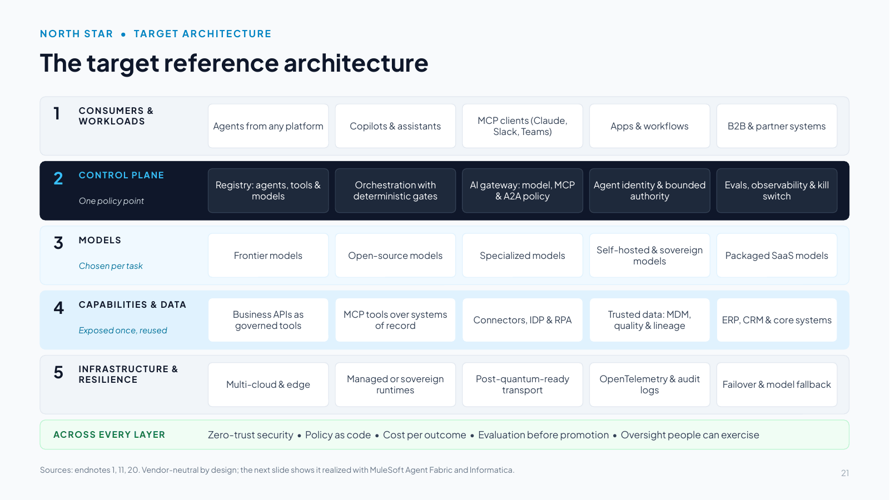
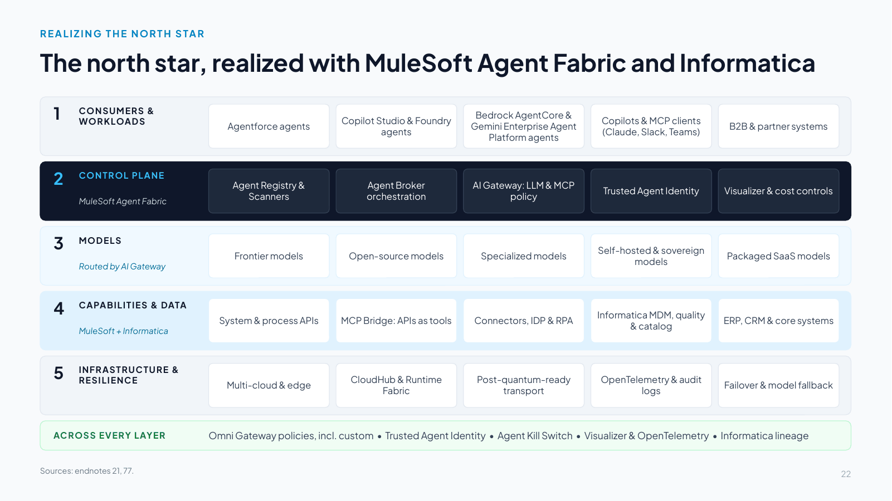
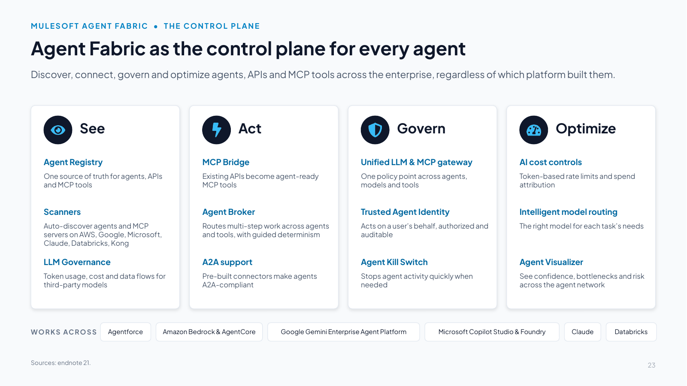
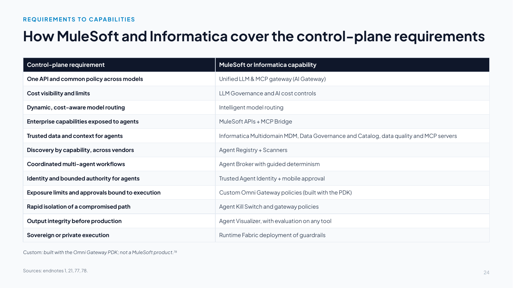
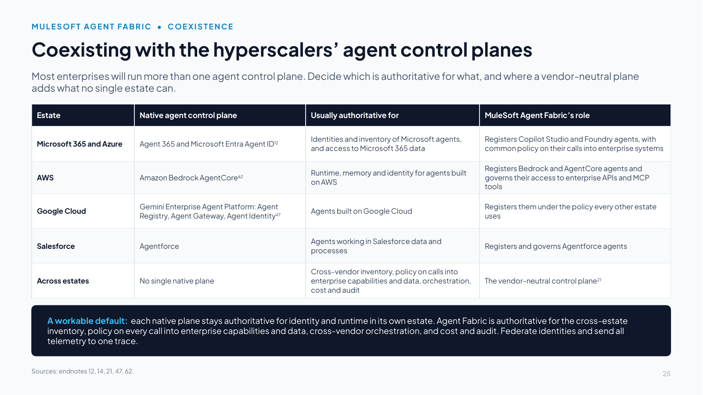
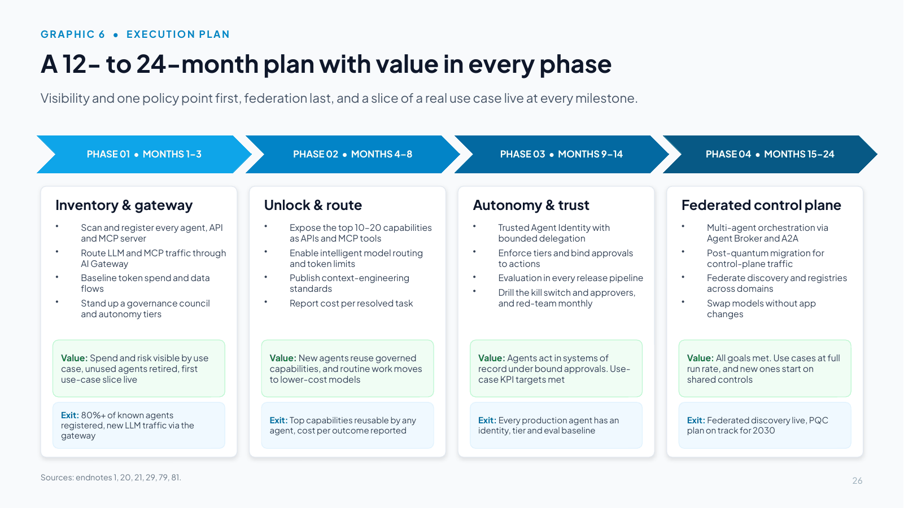
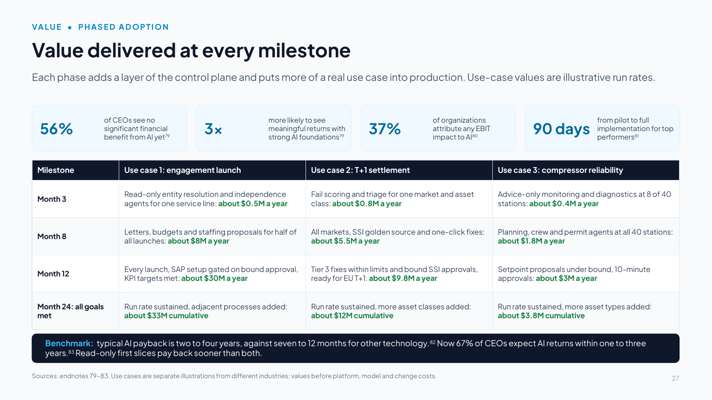
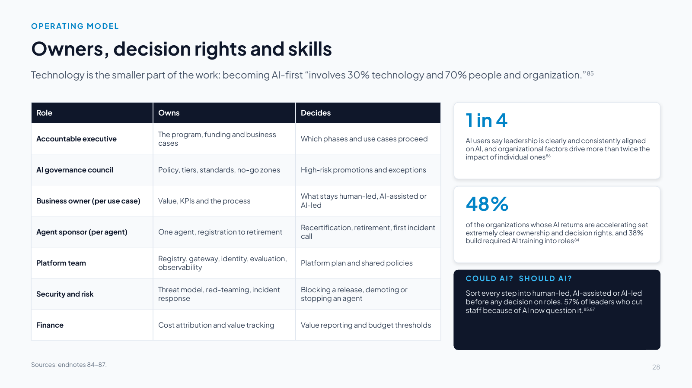
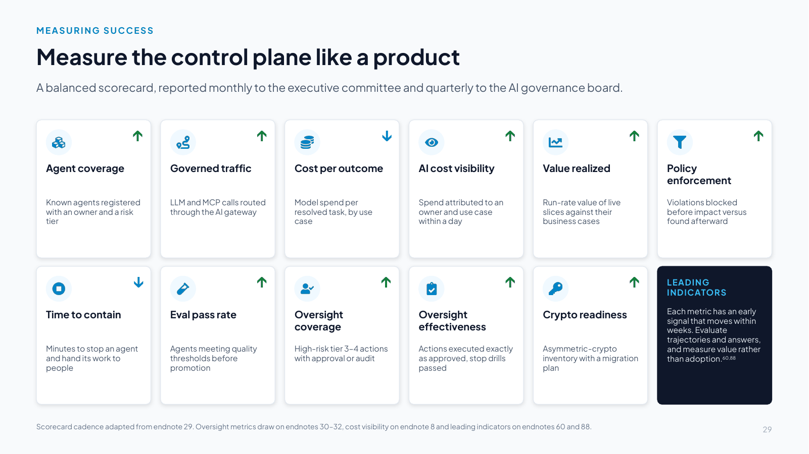

Slides 21–29
From north star to plan
Slide 21 The target reference architecture

Slide text
1. CONSUMERS & WORKLOADS
Agents from any platform
Copilots & assistants
MCP clients (Claude, Slack, Teams)
Apps & workflows
B2B & partner systems
2. CONTROL PLANE
One policy point
Registry: agents, tools & models
Orchestration with deterministic gates
AI gateway: model, MCP & A2A policy
Agent identity & bounded authority
Evals, observability & kill switch
3. MODELS
Chosen per task
Frontier models
Open-source models
Specialized models
Self-hosted & sovereign models
Packaged SaaS models
4. CAPABILITIES & DATA
Exposed once, reused
Business APIs as governed tools
MCP tools over systems of record
Connectors, IDP & RPA
Trusted data: MDM, quality & lineage
ERP, CRM & core systems
5. INFRASTRUCTURE & RESILIENCE
Multi-cloud & edge
Managed or sovereign runtimes
Post-quantum-ready transport
OpenTelemetry & audit logs
Failover & model fallback
ACROSS EVERY LAYER
Zero-trust security • Policy as code • Cost per outcome • Evaluation before promotion • Oversight people can exercise
Sources: endnotes 1, 11, 20. Vendor-neutral by design; the next slide shows it realized with MuleSoft Agent Fabric and Informatica.
Speaker notes
This is the north star: a vendor-neutral target reference architecture that turns the research in the first half of this briefing into what good looks like. Use it as the yardstick for any platform decision. The next slide shows it realized with MuleSoft Agent Fabric and Informatica.
The layers:
- Consumers and workloads: agents from any platform, copilots and assistants, MCP clients such as Claude, Slack and Teams, apps and workflows, and partner systems.
- Control plane, the one policy point: a registry of agents, tools and models with owners and risk tiers, plus orchestration with deterministic gates. It also includes an AI gateway for model, MCP and A2A traffic, agent identity with bounded authority, and evaluation, observability and a kill switch.
- Models: frontier, open-source, specialized, self-hosted and packaged SaaS models, chosen per task within cost, latency and regulatory limits [1].
- Capabilities and data: business capabilities exposed once as governed APIs and MCP tools, plus connectors, document processing and automation, and trusted data, with master data, quality and lineage.
- Infrastructure and resilience: multi-cloud and edge, managed or sovereign runtimes, post-quantum-ready transport, OpenTelemetry and audit logs, and failover with model fallback.
Across every layer: zero-trust security and governance, including policy as code, cost per outcome, evaluation before promotion and human oversight that people can exercise.
Principles: one policy point, capabilities not channels, open by default (MCP and A2A), trust by design, economics built in, and adoptable in stages. Each layer delivers value on its own, so the plan can return value in every phase. Control planes compete for authority over identity, orchestration and data [11], and published guidance on architecting for agentic AI starts with governance and a single policy point [20].
Design rule: nothing in layer 1 calls layer 3 or 4 directly. Every agent-to-model and agent-to-tool call traverses layer 2. In operational technology the rule extends one layer down: no agent reaches a control system except through a governed conduit, and independent safety systems sit beneath everything.
Slide 22 The north star, realized with MuleSoft Agent Fabric and Informatica

Slide text
1. CONSUMERS & WORKLOADS
Agentforce agents
Copilot Studio & Foundry agents
Bedrock AgentCore & Gemini Enterprise Agent Platform agents
Copilots & MCP clients (Claude, Slack, Teams)
B2B & partner systems
2. CONTROL PLANE
MuleSoft Agent Fabric
Agent Registry & Scanners
Agent Broker orchestration
AI Gateway: LLM & MCP policy
Trusted Agent Identity
Visualizer & cost controls
3. MODELS
Routed by AI Gateway
Frontier models
Open-source models
Specialized models
Self-hosted & sovereign models
Packaged SaaS models
4. CAPABILITIES & DATA
MuleSoft + Informatica
System & process APIs
MCP Bridge: APIs as tools
Connectors, IDP & RPA
Informatica MDM, quality & catalog
ERP, CRM & core systems
5. INFRASTRUCTURE & RESILIENCE
Multi-cloud & edge
CloudHub & Runtime Fabric
Post-quantum-ready transport
OpenTelemetry & audit logs
Failover & model fallback
ACROSS EVERY LAYER
Omni Gateway policies, incl. custom • Trusted Agent Identity • Agent Kill Switch • Visualizer & OpenTelemetry • Informatica lineage
Speaker notes
This slide shows the north star realized: every layer of the vendor-neutral architecture maps to a MuleSoft or Informatica capability. The control plane (layer 2) sits between consumer workloads and the models and data beneath, and applies identity, policy, routing, cost controls and audit to every agent-to-model and agent-to-tool call.
How the layers map:
- Consumers and workloads: agents from any platform (Agentforce, Copilot Studio and Foundry, Bedrock AgentCore, Gemini Enterprise Agent Platform), copilots and MCP clients such as Claude, Slack and Teams, and B2B systems, discovered by Agent Scanners and registered in Agent Registry [21].
- Control plane, MuleSoft Agent Fabric: Agent Registry and Scanners (inventory), Agent Broker (orchestration), AI Gateway (one policy point for LLM and MCP traffic), Trusted Agent Identity, and Agent Visualizer and AI cost controls [21].
- Models: five model classes, routed per task by AI Gateway's intelligent model routing, with token-based rate limits and spend attribution [1][21].
- Capabilities and data: MuleSoft system and process APIs, MCP Bridge and connectors with IDP and RPA, plus Informatica for master data, data quality, catalog and lineage (with data services exposed to agents through Informatica's MCP servers) and Salesforce Data 360 for customer data [21][77].
- Infrastructure and resilience: multi-cloud and edge, CloudHub or customer-managed Runtime Fabric, post-quantum-ready transport, OpenTelemetry and audit logs, and failover.
Across every layer: Omni Gateway policies (including custom ones), Trusted Agent Identity, the Agent Kill Switch, Agent Visualizer and OpenTelemetry traces, and Informatica governance and lineage.
Design rule: nothing in layer 1 calls layer 3 or 4 directly. Every agent-to-model and agent-to-tool call traverses layer 2. In operational technology the rule extends one layer down: no agent reaches a control system except through a governed conduit, and independent safety systems sit beneath everything (reference use case 3 applies this to a gas pipeline operator).
Slide 23 Agent Fabric as the control plane for every agent

Slide text
Discover, connect, govern and optimize agents, APIs and MCP tools across the enterprise, regardless of which platform built them.
See
Agent Registry
One source of truth for agents, APIs and MCP tools
Scanners
Auto-discover agents and MCP servers on AWS, Google, Microsoft, Claude, Databricks, Kong
LLM Governance
Token usage, cost and data flows for third-party models
Act
MCP Bridge
Existing APIs become agent-ready MCP tools
Agent Broker
Routes multi-step work across agents and tools, with guided determinism
A2A support
Pre-built connectors make agents A2A-compliant
Govern
Unified LLM & MCP gateway
One policy point across agents, models and tools
Trusted Agent Identity
Acts on a user’s behalf, authorized and auditable
Agent Kill Switch
Stops agent activity quickly when needed
Optimize
AI cost controls
Token-based rate limits and spend attribution
Intelligent model routing
The right model for each task’s needs
Agent Visualizer
See confidence, bottlenecks and risk across the agent network
WORKS ACROSS
Agentforce
Amazon Bedrock & AgentCore
Google Gemini Enterprise Agent Platform
Microsoft Copilot Studio & Foundry
Claude
Databricks
Sources: endnote 21.
Speaker notes
How Agent Fabric covers the control-plane requirements:
- Breadth: it governs agents regardless of where they were built. Scanners discover and register agents, MCP servers and APIs from ecosystems including Amazon (Bedrock and AgentCore), Google (Gemini Enterprise Agent Platform, formerly Vertex AI), Microsoft (Copilot Studio, Microsoft Foundry), Claude, Databricks and Kong [21].
- Depth: it is built on MuleSoft's integration and API management foundation, so agents can take action in the systems where work happens as well as answer questions.
- Enforcement at runtime: policy, identity, rate limits and the kill switch are applied in the gateway path [21].
- Economics: token visibility, spend attribution and intelligent routing connect AI spend to business value [21].
Be precise: governance is applied to agent traffic that flows through MuleSoft [21]. The architecture principle is therefore to route every agent-to-model and agent-to-tool call through the fabric. Shadow agents running on endpoints still need endpoint and identity controls. Decoys help find what inventories miss: honeytoken credentials, canary documents and decoy MCP tools that no sanctioned agent should ever touch, so any use flags an agent working outside the governed path. A custom Omni Gateway policy family can plant and watch them [78].
Relationship to Agentforce: Agentforce is an agent platform for building and running agents in Salesforce. Agent Fabric is the control plane that registers, governs, orchestrates and observes all agents and MCP endpoints, including Agentforce. Both use the same engine for defining how agents reason, plan and act [21].
Slide 24 How MuleSoft and Informatica cover the control-plane requirements

Slide text
| Control-plane requirement | MuleSoft or Informatica capability |
|---|---|
| One API and common policy across models | Unified LLM & MCP gateway (AI Gateway) |
| Cost visibility and limits | LLM Governance and AI cost controls |
| Dynamic, cost-aware model routing | Intelligent model routing |
| Enterprise capabilities exposed to agents | MuleSoft APIs + MCP Bridge |
| Trusted data and context for agents | Informatica Multidomain MDM, Data Governance and Catalog, data quality and MCP servers |
| Discovery by capability, across vendors | Agent Registry + Scanners |
| Coordinated multi-agent workflows | Agent Broker with guided determinism |
| Identity and bounded authority for agents | Trusted Agent Identity + mobile approval |
| Exposure limits and approvals bound to execution | Custom Omni Gateway policies (built with the PDK) |
| Rapid isolation of a compromised path | Agent Kill Switch and gateway policies |
| Output integrity before production | Agent Visualizer, with evaluation on any tool |
| Sovereign or private execution | Runtime Fabric deployment of guardrails |
Custom: built with the Omni Gateway PDK; not a MuleSoft product.78
Speaker notes
How to use this slide: it maps each control-plane requirement to a specific MuleSoft or Informatica capability [1][21].
- Trusted data: Informatica Multidomain MDM, Data Governance and Catalog and data quality, with data services exposed to agents through Informatica's MCP servers, such as CDGC Metadata Search and Address Verification [77].
- Output integrity: Agent Visualizer adds confidence, bottleneck and hallucination-risk signals [21]. The evaluation itself runs on any tool that scores outcomes before release, with the results recorded in the registry [62][63].
- Custom: Omni Gateway runs custom policies written in Rust and compiled to WebAssembly with the Policy Development Kit [78]. Approval-to-Execution Binding (the executed MCP or A2A action must match its approval, including a freshness check against the gateway's own clock and a separate attester), Cross-Session Aggregate-Risk Gate (reserve-then-authorize against a shared exposure budget) and decoy and honeytoken policies (planted credentials and tools that flag any agent working outside the governed path) are custom policies, not MuleSoft products. The customer or partner owns their testing and support.
Slide 25 Coexisting with the hyperscalers’ agent control planes

Slide text
Most enterprises will run more than one agent control plane. Decide which is authoritative for what, and where a vendor-neutral plane adds what no single estate can.
| Estate | Native agent control plane | Usually authoritative for | MuleSoft Agent Fabric’s role |
|---|---|---|---|
| Microsoft 365 and Azure | Agent 365 and Microsoft Entra Agent ID12 | Identities and inventory of Microsoft agents, and access to Microsoft 365 data | Registers Copilot Studio and Foundry agents, with common policy on their calls into enterprise systems |
| AWS | Amazon Bedrock AgentCore62 | Runtime, memory and identity for agents built on AWS | Registers Bedrock and AgentCore agents and governs their access to enterprise APIs and MCP tools |
| Google Cloud | Gemini Enterprise Agent Platform: Agent Registry, Agent Gateway, Agent Identity47 | Agents built on Google Cloud | Registers them under the policy every other estate uses |
| Salesforce | Agentforce | Agents working in Salesforce data and processes | Registers and governs Agentforce agents |
| Across estates | No single native plane | Cross-vendor inventory, policy on calls into enterprise capabilities and data, orchestration, cost and audit | The vendor-neutral control plane21 |
A workable default: each native plane stays authoritative for identity and runtime in its own estate. Agent Fabric is authoritative for the cross-estate inventory, policy on every call into enterprise capabilities and data, cross-vendor orchestration, and cost and audit. Federate identities and send all telemetry to one trace.
Speaker notes
Most enterprises already run more than one agent control plane, so "why another one?" is a fair question. Microsoft describes Agent 365 as "the control-plane for AI agents", with Microsoft Entra Agent ID for agent identities [12]. AWS offers Amazon Bedrock AgentCore (Runtime, Memory, Gateway for MCP servers, Identity and OpenTelemetry-compatible Observability) [62]. Google's Gemini Enterprise Agent Platform includes Agent Registry, Agent Gateway and Agent Identity [47]. Agentforce runs agents in Salesforce data and processes.
Each governs its own estate well. The answer is a division of labor, agreed up front: which system is authoritative for inventory, identity, policy and telemetry. A workable default keeps each native plane authoritative for identity and runtime inside its estate. MuleSoft Agent Fabric is then authoritative for the cross-estate inventory, policy on every call into enterprise capabilities and data, orchestration across vendors, and cost and audit [21]. Microsoft's own Cloud Adoption Framework takes the same approach inside its estate: it names Agent 365, or Entra Agent ID where Agent 365 is not in use at scale, as the authoritative inventory and asks for consistent policy across every agent platform [14].
Slide 26 A 12- to 24-month plan with value in every phase

Slide text
Visibility and one policy point first, federation last, and a slice of a real use case live at every milestone.
PHASE 01 • MONTHS 1–3
Inventory & gateway
Scan and register every agent, API and MCP server
Route LLM and MCP traffic through AI Gateway
Baseline token spend and data flows
Stand up a governance council and autonomy tiers
Value: Spend and risk visible by use case, unused agents retired, first use-case slice live
Exit: 80%+ of known agents registered, new LLM traffic via the gateway
PHASE 02 • MONTHS 4–8
Unlock & route
Expose the top 10–20 capabilities as APIs and MCP tools
Enable intelligent model routing and token limits
Publish context-engineering standards
Report cost per resolved task
Value: New agents reuse governed capabilities, and routine work moves to lower-cost models
Exit: Top capabilities reusable by any agent, cost per outcome reported
PHASE 03 • MONTHS 9–14
Autonomy & trust
Trusted Agent Identity with bounded delegation
Enforce tiers and bind approvals to actions
Evaluation in every release pipeline
Drill the kill switch and approvers, and red-team monthly
Value: Agents act in systems of record under bound approvals. Use-case KPI targets met
Exit: Every production agent has an identity, tier and eval baseline
PHASE 04 • MONTHS 15–24
Federated control plane
Multi-agent orchestration via Agent Broker and A2A
Post-quantum migration for control-plane traffic
Federate discovery and registries across domains
Swap models without app changes
Value: All goals met. Use cases at full run rate, and new ones start on shared controls
Exit: Federated discovery live, PQC plan on track for 2030
Speaker notes
Value comes first: this is a reference architecture adopted incrementally, and every phase delivers something the business can see. The research supports the approach: 56% of CEOs report no significant financial benefit from AI so far, yet strong AI foundations make meaningful returns three times more likely [79]. High performers build a repeatable capability instead of accumulating pilots [80], and successful deployments start in adjacent processes, prove clear value, then scale into core workflows, with top performers moving from pilot to full implementation in about 90 days [81]. Each phase is funded against the value the previous one proved.
By Phase 4 the organization has an agile, model-agnostic control plane that can swap models without recoding applications, and each use case runs at its full run rate.
Why this sequence:
- Phase 1 is visibility plus a single policy point: Agent Scanners and Agent Registry for inventory, AI Gateway for LLM and MCP traffic, and a governance council and published autonomy tiers (the first 90 days of the CDO Magazine plan [29]). Start new policies in audit mode, then enforce, as Microsoft's Cloud Adoption Framework recommends [14]. Value: spend and risk visible by use case, unused agents retired, and the first use-case slice live in assist mode.
- Phase 2 opens up the enterprise: expose the highest-value capabilities through MuleSoft APIs and MCP Bridge, then turn on model routing and token-based rate limits so cost per outcome becomes measurable [21]. Value: every new agent reuses governed capabilities, and routine work moves to lower-cost models.
- Phase 3 hardens trust: Trusted Agent Identity with bounded delegation, enforced tiers with approvals bound to the actions they authorize, kill-switch and approver drills, evaluation in release pipelines and monthly red-teaming. Value: agents can act in systems of record under bound approvals, which is where most of each use case's business case sits.
- Phase 4 federates: multi-agent orchestration across domains through Agent Broker and A2A, post-quantum migration for control-plane traffic ahead of the 2030–2031 federal deadlines, and discovery and registries federated across domains. Value: all goals met, with new use cases starting on shared controls.
- Bain [20] supports doing federated discovery and cross-domain routing last, because they add complexity that is only justified once governance and orchestration are mature.
Slide 27 Value delivered at every milestone

Slide text
Each phase adds a layer of the control plane and puts more of a real use case into production. Use-case values are illustrative run rates.
56%
of CEOs see no significant financial benefit from AI yet79
3×
more likely to see meaningful returns with strong AI foundations79
37%
of organizations attribute any EBIT impact to AI80
90 days
from pilot to full implementation for top performers81
| Milestone | Use case 1: engagement launch | Use case 2: T+1 settlement | Use case 3: compressor reliability |
|---|---|---|---|
| Month 3 | Read-only entity resolution and independence agents for one service line: about $0.5M a year | Fail scoring and triage for one market and asset class: about $0.8M a year | Advice-only monitoring and diagnostics at 8 of 40 stations: about $0.4M a year |
| Month 8 | Letters, budgets and staffing proposals for half of all launches: about $8M a year | All markets, SSI golden source and one-click fixes: about $5.5M a year | Planning, crew and permit agents at all 40 stations: about $1.8M a year |
| Month 12 | Every launch, SAP setup gated on bound approval, KPI targets met: about $30M a year | Tier 3 fixes within limits and bound SSI approvals, ready for EU T+1: about $9.8M a year | Setpoint proposals under bound, 10-minute approvals: about $3M a year |
| Month 24: all goals met | Run rate sustained, adjacent processes added: about $33M cumulative | Run rate sustained, more asset classes added: about $12M cumulative | Run rate sustained, more asset types added: about $3.8M cumulative |
Benchmark: typical AI payback is two to four years, against seven to 12 months for other technology.82 Now 67% of CEOs expect AI returns within one to three years.83 Read-only first slices pay back sooner than both.
Sources: endnotes 79–83. Use cases are separate illustrations from different industries; values before platform, model and change costs.
Speaker notes
Use this slide to answer the ROI question directly. The top row is the research. More than half of CEOs report no significant financial benefit from AI so far, but organizations with strong AI foundations are three times more likely to report meaningful returns [79]. Of the organizations surveyed, 37% attribute any EBIT impact to AI, and high performers redesign workflows and build a repeatable capability rather than accumulating pilots [80]. Top performers move from pilot to full implementation in about 90 days, starting in adjacent processes and scaling into core workflows once value is proven [81].
The table shows how each reference use case is phased with the plan. Each column is a separate illustration from a different industry, not a sum. Values are illustrative annual run rates at each milestone, before platform, model and change costs, derived from each use case's business case:
- Use case 1 (10,000 launches a year): month 3 covers one service line in one region, about a tenth of launches, with effort down from 14 to 10 hours (about $0.5M). At month 8, half of all launches get letters, budgets and staffing proposals (about $8M: capacity $3.6M, utilization $4.5M). At month 12, every launch is covered, with SAP setup gated on the partner's bound approval and all KPI targets met (about $30M). Cumulative value reaches about $33M by month 24.
- Use case 2 (1,500 exceptions a day): month 3 covers one market and asset class, with handling time down from 18 to 13 minutes (about $0.8M). At month 8, all markets are covered, with the SSI golden source and one-click fixes (about $5.5M). At month 12, tier 3 automation runs within cross-session limits and bound SSI approvals, with 40% auto-resolved and 9-minute handling (about $9.8M), plus fewer fails and penalties. The cumulative total is about $12M by month 24.
- Use case 3 (40 stations): month 3 gives advice only, at 8 stations (about $0.4M). At month 8, planning, crew and permit agents run at all stations with no changes to equipment (about $1.8M). At month 12, setpoint proposals run under bound, 10-minute approvals after stop drills pass (about $3M). By month 24 the cumulative value is about $3.8M.
The pattern: the early milestones release capacity from assembling, checking and drafting in read-only or propose-only modes, and the larger gains arrive once agents can act in systems of record under the approvals and limits that phase 3 puts in place.
The benchmark band: finance will test the month-3 and month-8 run rates against published payback data. In Deloitte's 2025 survey of 1,854 executives in Europe and the Middle East, most reached satisfactory ROI on a typical AI use case within two to four years, against the seven to 12 months expected of technology investments, while only 6% saw payback within a year, 10% see significant ROI from agentic AI today and 85% of the survey’s AI ROI leaders use different frameworks or timeframes for generative and agentic AI [82]. In KPMG's 2025 Global CEO Outlook, 67% of 1,350 CEOs expected AI returns within one to three years, where a year earlier most expected three to five [83]. Google Cloud's 2026 survey of 2,403 executives found 84% seeing increasing financial returns from AI and 26% seeing returns accelerate [84]. Phasing lets the program beat the benchmark, because read-only slices pay back within months and fund the controls the larger gains depend on.
Slide 28 Owners, decision rights and skills

Slide text
Technology is the smaller part of the work: becoming AI-first “involves 30% technology and 70% people and organization.”85
| Role | Owns | Decides |
|---|---|---|
| Accountable executive | The program, funding and business cases | Which phases and use cases proceed |
| AI governance council | Policy, tiers, standards, no-go zones | High-risk promotions and exceptions |
| Business owner (per use case) | Value, KPIs and the process | What stays human-led, AI-assisted or AI-led |
| Agent sponsor (per agent) | One agent, registration to retirement | Recertification, retirement, first incident call |
| Platform team | Registry, gateway, identity, evaluation, observability | Platform plan and shared policies |
| Security and risk | Threat model, red-teaming, incident response | Blocking a release, demoting or stopping an agent |
| Finance | Cost attribution and value tracking | Value reporting and budget thresholds |
1 in 4
AI users say leadership is clearly and consistently aligned on AI, and organizational factors drive more than twice the impact of individual ones86
48%
of the organizations whose AI returns are accelerating set extremely clear ownership and decision rights, and 38% build required AI training into roles84
COULD AI? SHOULD AI?
Sort every step into human-led, AI-assisted or AI-led before any decision on roles. 57% of leaders who cut staff because of AI now question it.85,87
Speaker notes
The plan names one accountable executive and a governance council. This slide shows the day-to-day model beneath them.
Why it matters: BCG estimates that becoming AI-first "involves 30% technology and 70% people and organization" [85]. In Microsoft's 2026 Work Trend Index (20,000 people using AI at work in 10 countries), only one in four said their leadership is clearly and consistently aligned on AI, and organizational factors accounted for more than twice the reported impact of individual ones [86]. In Google Cloud's 2026 survey, 48% of the organizations whose AI returns are accelerating had "extremely clear" ownership and decision rights for AI and agentic initiatives, and 38% built required AI training into roles [84].
The roles: the accountable executive owns the program and decides which phases proceed. The AI governance council (architecture, security, risk, data, finance and the business) owns policy, tiers and no-go zones. The business owner is accountable for value and decides which steps stay human. Each agent has a sponsor who owns it from registration to retirement and recertifies it. The platform team runs the control plane as a product. Security and risk can block a release or demote an agent, and finance owns cost attribution and how value is reported.
Could AI, should AI: BCG suggests sorting work into human-led, AI-assisted and AI-led by asking whether AI could do each step as well as or better than people, and whether it should, given regulatory risk, customer trust, ethics and safety [85]. Record the answer before any decision on roles: Deloitte's 2026 Human Capital Trends found that 57% of leaders who cut staff because of AI have come to question that decision [87]. Build skills in step with the plan: approvers on what they approve, sponsors on the lifecycle, business teams on working alongside agents.
Slide 29 Measure the control plane like a product

Slide text
A balanced scorecard, reported monthly to the executive committee and quarterly to the AI governance board.
↑
Agent coverage
Known agents registered with an owner and a risk tier
↑
Governed traffic
LLM and MCP calls routed through the AI gateway
↓
Cost per outcome
Model spend per resolved task, by use case
↑
AI cost visibility
Spend attributed to an owner and use case within a day
↑
Value realized
Run-rate value of live slices against their business cases
↑
Policy enforcement
Violations blocked before impact versus found afterward
↓
Time to contain
Minutes to stop an agent and hand its work to people
↑
Eval pass rate
Agents meeting quality thresholds before promotion
↑
Oversight coverage
High-risk tier 3–4 actions with approval or audit
↑
Oversight effectiveness
Actions executed exactly as approved, stop drills passed
↑
Crypto readiness
Asymmetric-crypto inventory with a migration plan
LEADING INDICATORS
Each metric has an early signal that moves within weeks. Evaluate trajectories and answers, and measure value rather than adoption.60,88
Scorecard cadence adapted from endnote 29. Oversight metrics draw on endnotes 30–32, cost visibility on endnote 8 and leading indicators on endnotes 60 and 88.
Speaker notes
Treat the control plane as a product with an owner, a plan and a scorecard. Arrows show the desired direction. Reporting cadence follows the CDO Magazine plan [29].
Stress AI cost visibility, because in KPMG's Q2 2026 pulse only 26% of organizations had full, real-time visibility into AI operating costs [8]. Also stress time to contain, which includes handing the stopped agent's open work to a named person, tested in takeover drills.
Leading indicators, one per metric, so delivery teams see movement within weeks: unregistered agents found (coverage), new agents launched behind the gateway (governed traffic), cost per successful task (cost per outcome) [60], spend attributed within a day (cost visibility), acceptance rate counting undo and revert as rejections (value) [60], blocked calls per 1,000 (policy enforcement), drill time (time to contain), tool-selection accuracy and plan adherence on sampled traces (eval pass rate) [60], verification latency (oversight coverage), takeover rate (oversight effectiveness) [60], and algorithm agility (crypto readiness). Evaluate the trajectory as well as the answer [60], and measure value instead of adoption. In BCG's 2026 survey of close to 12,000 employees and leaders, organizations with agents in their workflows rose from 13% to 30% in a year, yet half said governance for teams of people and AI is unclear [88].
Questions the board should be able to ask, and management should be able to answer:
- Which agents are running today, who owns and sponsors each one, what tier is it, and when was it last recertified?
- What share of our model and tool traffic is governed by a single policy point?
- Which system is the authoritative record for our agents' inventory, identity and policy across Microsoft, AWS, Google and Salesforce?
- What do we spend per resolved task, by use case, and is it falling?
- What share of our AI spend can we attribute to an owner and a use case today?
- Which phase of the plan are we in, and what value has each live use-case slice delivered against its business case?
- Before any decision on roles or headcount, have we agreed which work stays human-led, which is AI-assisted and which AI-led, and why?
- How quickly can we stop an agent or revoke its credentials?
- If we switched off our most important agent today, who would take over its work, and when did we last rehearse that?
- Can we prove who, or what, authorized a given action, and on whose behalf?
- Could the people who approve our riskiest agent actions actually stop one in time, and when did we last prove it?
- What happens by default when an approval expires or monitoring goes quiet?
- Which agents passed evaluation before promotion to production?
- Which recognized agentic threats does our design cover, and who owns the gaps?
- If a model provider changed its pricing or suffered an eight-hour outage tomorrow, would our business halt?
- Where does asymmetric cryptography protect our most sensitive data, and what is the migration plan for the 2030–2031 horizon?
- Where can an agent's action reach physical equipment, and what independent layer stops it if the agent is wrong?
Data sources in Agent Fabric: Agent Registry (coverage, owners, tiers), AI Gateway and LLM Governance (traffic, tokens, cost, cost attribution, policy events), Agent Kill Switch and Trusted Agent Identity (containment and authorization records), Agent Visualizer and evaluation results (quality and risk signals). Oversight effectiveness comes from the approval-binding policy's events and from kill-switch and approver drill records. Coverage counts who is assigned, while effectiveness shows they could intervene in time [30][31][32]. Value realized comes from business-case tracking agreed with finance: the run-rate value of each live use-case slice against its plan, reported at every milestone.